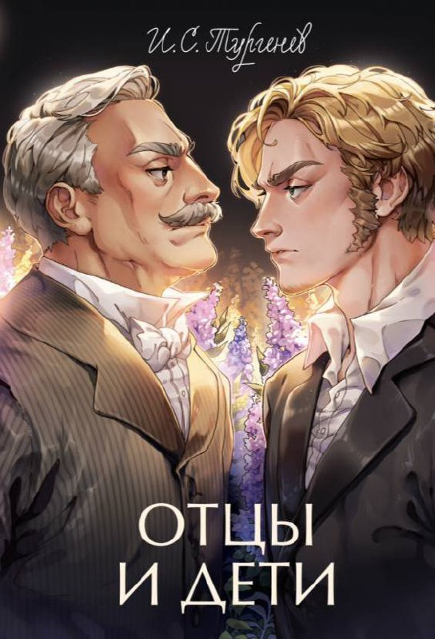

Нима учун яқинларимиз кексайганда шунчалик чидаб бўлмас бўлиб қолишади?

Улар бизни энг кўп оғритишади, барча заиф нуқталаримизни билиб, ўша жойларга аниқ зарба беришади. Баъзида эса бизнинг азобланишимизни жуда аниқлик билан кузатиб туришади.
- Бу нима, эгоизм-ми? Замон ўзгариши? Бепарволик? Ёш сарқити?
Бунга қуйидагича жавоб берган бўлар эдим:
Аслида инсон умри давомида бир эмас икки марта айрилиш даври бўлади ва одам яқинлари учун чидаб бўлмас бўлиб қолади. Бу эҳтимол ажралиш ва кетишни осонлаштириш учундир.
Биринчиси, ёшликда ўсмирлар мустақил ҳаёт бошлашдан олдин чидаб бўлмас бўлиб қолишади. Улар ота-оналарини шунчалик безор қиладики, ота-оналар уларнинг кетиши ва алоҳида яшай бошлашига хурсанд бўлиб қолишади. Барча нозик алоқалар узилиб, фарзанд билан ажралиш оғриқсиз кечади. Боғланиш, меҳр секин-аста сўнади.
Одам кексайганда ёш бола сингари бўлиб қолади, деган гап бор. Бу тушунча иккинчи тур айрилишга тааллуқлидир.
Иккинчиси, қариликда ҳам худди шундай бўлади. Ҳаёт бизни сўнгги видолашувга шу тарзда тайёрлайди. Умрининг сўнгги йилларида қадрдон киши қанчалик чидаб бўлмас бўлса, видолашиш шунчалик осон кечади, чунки барча нозик алоқалар ҳали тириклик пайтидаёқ узилиб кетади, фақат бурч қолади, боғланиш, меҳр эса аста-секин йўқолади.
Биринчи ҳолатда ҳам, иккинчи ҳолатда ҳам муносабатларда меҳрибонликни сақлаб қолган тараф учун қийинроқ бўлади.
Бу ҳолатларни "Ким биринчи асабийлашади!" - деган ўйинга қиёс қилса бўлади.
Фақатгина сабр қилганларгина мукофотланади!
П/с:
"Маълумки, арзимас бир тийинлик шамдан Москва ҳам ёниб кетган." И.Тургенев ("Отцы и дети" асаридан)